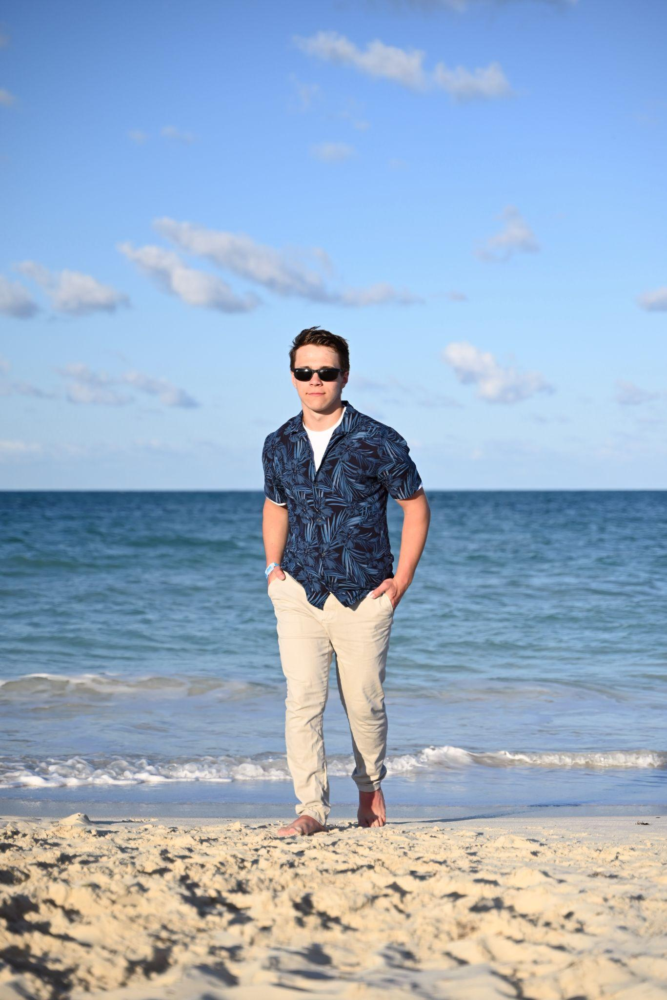

Daniel Soloshchenko
Hi! I'm Daniel, a Grade 11 IB student at R.E. Mountain Secondary School.
I've always loved figuring out how things work, whether it's cars, airplanes, robots, or anything mechanical. As President of our Robotics Club and a Senior Executive of the Debate Club, I enjoy solving problems and helping others learn new skills.
Growing up with four younger siblings has given me lots of experience working with kids (and plenty of patience!). Over the years, I've loved introducing them to science and helping them explore their interests. I also have two years of professional cooking experience and hold a FoodSafe Certification. At AccessSTEM, I'm excited to create fun activities and help campers discover that STEM can be exciting, creative, and accessible to everyone.